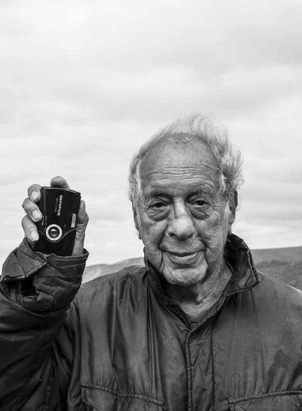

Robert Frank
Robert Frank crée une nou- velle forme de photogra- phie vernaculaire et redéfi- nit, comme le firent les au- teurs de la beat generation, une image de la société américaine non idéalisée. Il donne à voir les marginaux, les espaces vides, la pauvre- té, l'avidité et les excès.
Quelques autres photo de cet artiste